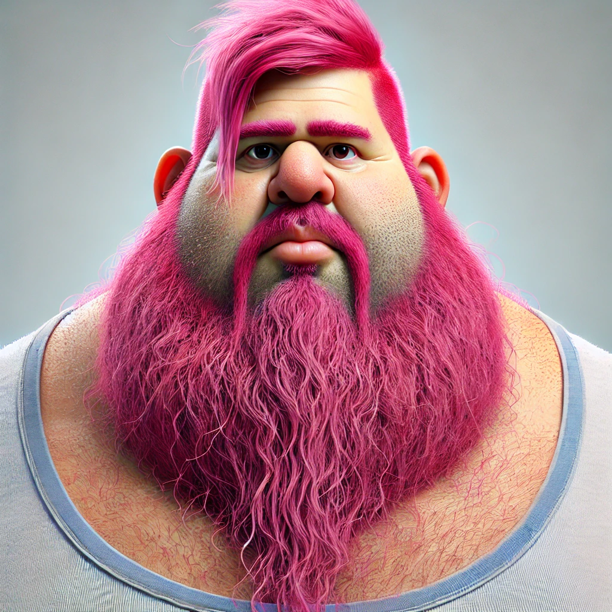

Unsere Geschichte
Rolling Willy startete mit einer einfachen Idee: 2 Räder montiert auf einem Brett. Somit begann auch Willis Interesse in E-Rollern. Mit ein wenig Hilfe von Finns Pferdehof gelang es Willi seinen Aufstieg in der Welt der Rollern. Nachdem er schon 10 importierte US-Roller verkauft hatte war er schon Millionär. Seitdem hat Willi sein ganzes Geld ausgegeben und er bittet darum, dass sie was einkaufen.
Meet the Team

Willy
Founder & CEO

Marko Popel
Co-Founder & COO